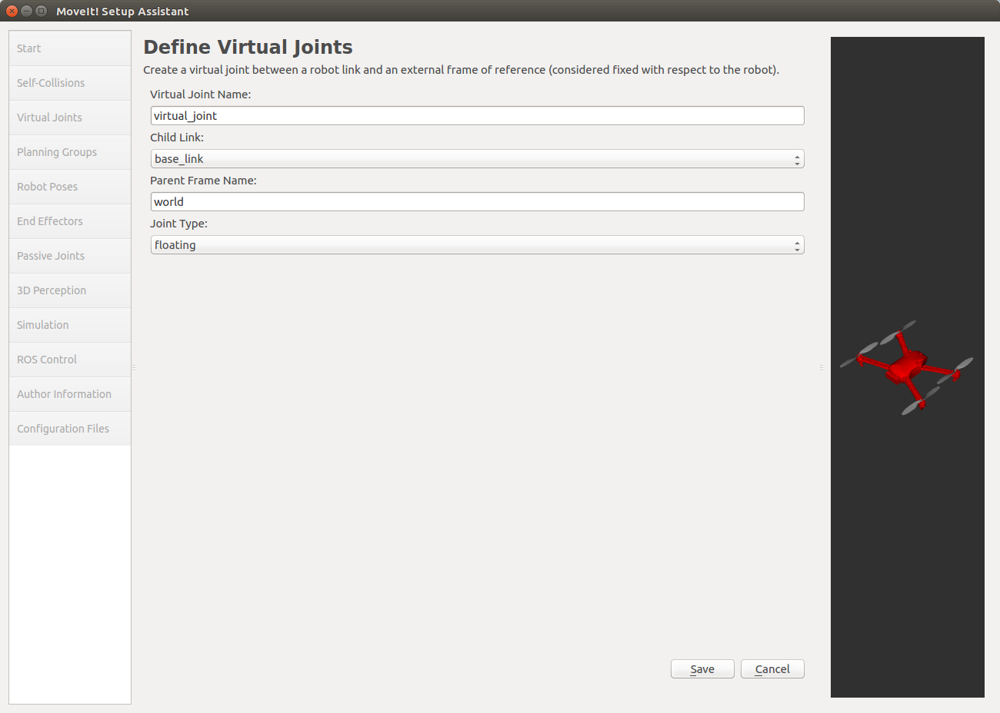
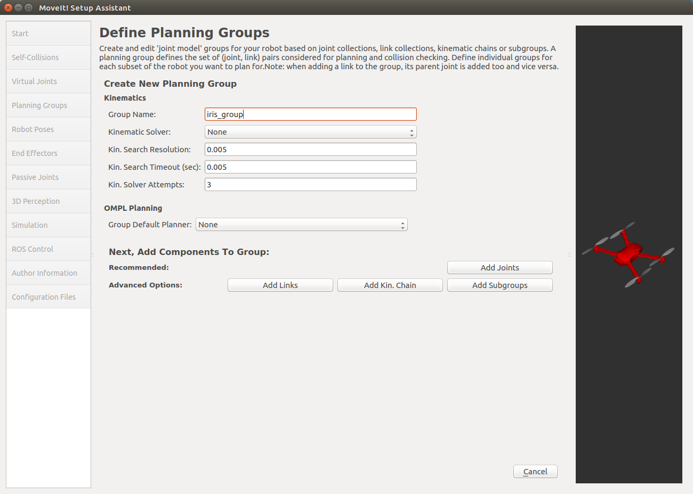
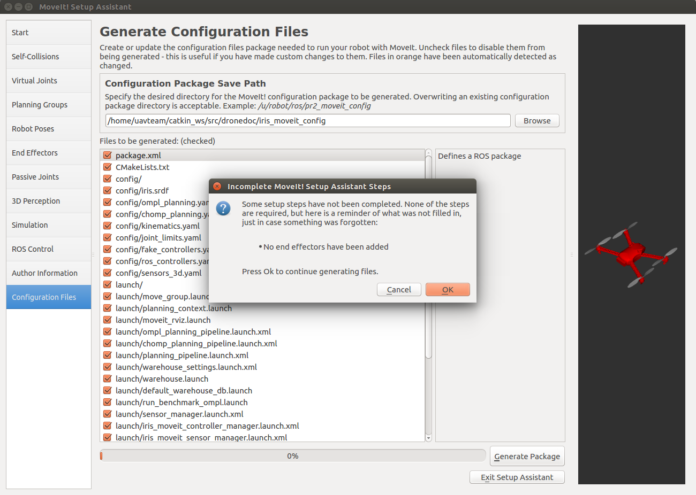

iris_moveit_configパッケージを作る¶
MoveIt!で動作計画を行うためには、そのロボット用の設定ファイルを含む専用のパッケージを作成する必要があります。 そのパッケージ作成用のツールがMoveIt! Setup Assistantです。 今回はMoveIt! Setup Assistantを使ってRGBDカメラ付きのIris用のパッケージを作成します。
パッケージはCOLLADAファイルからも作成できますが、今回は xacro ファイルから作成します。
xacroファイルを作る¶
必要なファイルをコピーする¶
はじめにRGBDカメラ付きのIrisのxacroファイルを作成します。 px4パッケージにすでにIrisのモデルのxacroファイルがあるので、これをコピーして新しいモデルを作成します。
xacroファイルはインクルードすることもできるので、コピーする必要は無いのですが、今回は元のファイルに編集したい部分があるのでコピーすることにします。
px4_sim_pkg/models/iris_depth_camera/xacroディレクトリ以下にコピーするので、ディレクトリが存在しない場合は以下のコマンドで作成しておいてください。
roscd px4_sim_pkg
mkdir -p models/iris_depth_camera/xacro
以下のコマンドで必要なファイルをコピーします。
cp -r ~/src/Firmware/Tools/sitl_gazebo/models/rotors_description/* ~/catkin_ws/src/px4_sim_pkg/models/iris_depth_camera/xacro/
multirotor_base.xacroを編集する¶
次に、multirotor_base.xacroの内容を変更します。 内容を変更するのではじめにバックアップをとっておきます。
cd ~/catkin_ws/src/px4_sim_pkg/models/iris_depth_camera/xacro/urdf
mv multirotor_base.xacro multirotor_base.xacro_
次に、sed を使って内容を編集します。
sedコマンドは、入力（ファイルの内容など）に対してテキストの編集を行うコマンドで、以下の場合は、multirotor_base.xacroファイル内の、 package://rotors_description を、全て package://mavlink_sitl_gazebo/models/rotors_description/ に置き換えます。
テキストエディタで編集する場合には同様の作業を行ってください。
multirotor_base.xacro内では、package://モデル名/meshes/メッシュ という様な形でメッシュへのパスを指定しており、Gazeboから利用する場合にはこの形式で良いのですが、setup_assistantを使用する場合には、package://パッケージ名/メッシュ の様にパスを指定する必要があります。
Gazeboを用いたPX4 SITLシミュレーションで使用するモデルはmavlink_sitl_gazeboパッケージに格納されているので、以下のように変更を行います。
sed -e 's/package:\/\/rotors_description\//package:\/\/mavlink_sitl_gazebo\/models\/rotors_description\//g' multirotor_base.xacro_ >| multirotor_base.xacro
編集に成功して、バックアップが必要なければ削除しておきましょう。
rm multirotor_base.xacro_
IrisにRGBDカメラを追加する¶
以下の内容をiris_base.xacroファイルの </robot> タグの直前に追加してください。
これは、Octomapを使って3Dマップを作る で作成したRGBDカメラ付きのIrisモデルのSDFファイルから抜き出したRGBDカメラの定義の部分をURDF用に編集したものです。
1 2 3 4 5 6 7 8 9 10 11 12 13 14 15 16 17 18 19 20 21 22 23 24 25 26 27 28 29 30 31 32 33 34 35 36 37 38 39 40 41 42 43 44 45 46 47 48 49 50 51 52 53 54 55 56 57 58 59 60 61 62 63 64 65 66 67 68 69 70 71 72 | <!-- camera link -->
<link name="camera_link">
<inertial>
<mass value="0.01" />
<origin xyz="0 0 0" rpy="0 0 0" />
<inertia ixx="1.8e-7"
ixy="0"
ixz="0"
iyy="2.1733e-6"
iyz="0"
izz="1.8e-7" />
</inertial>
<visual name="camera_visual">
<origin xyz="0 0 0" rpy="0 0 0" />
<geometry>
<box size="0.03 0.08 0.03" />
</geometry>
</visual>
</link>
<!-- depth camera attached to camera link -->
<gazebo reference="camera_link">
<sensor name="camera" type="depth">
<pose>0 0 0 1.57 -1.57 0</pose>
<update_rate>20</update_rate>
<camera>
<horizontal_fov>1.047198</horizontal_fov>
<image>
<width>640</width>
<height>320</height>
<format>R8G8B8</format>
</image>
<clip>
<near>0.4</near>
<far>3.5</far>
</clip>
</camera>
<plugin name="camera_plugin" filename="libgazebo_ros_openni_kinect.so">
<baseline>0.2</baseline>
<alwaysOn>true</alwaysOn>
<!-- Keep this zero, update_rate in the parent <sensor> tag
will control the frame rate. -->
<updateRate>0.0</updateRate>
<cameraName>camera_ir</cameraName>
<imageTopicName>/camera/depth/image_raw</imageTopicName>
<cameraInfoTopicName>/camera/depth/camera_info</cameraInfoTopicName>
<depthImageTopicName>/camera/depth/image_raw</depthImageTopicName>
<depthImageInfoTopicName>/camera/depth/camera_info</depthImageInfoTopicName>
<pointCloudTopicName>/camera/depth/points</pointCloudTopicName>
<frameName>camera_link</frameName>
<pointCloudCutoff>0.05</pointCloudCutoff>
<distortionK1>0</distortionK1>
<distortionK2>0</distortionK2>
<distortionK3>0</distortionK3>
<distortionT1>0</distortionT1>
<distortionT2>0</distortionT2>
<CxPrime>0</CxPrime>
<Cx>0</Cx>
<Cy>0</Cy>
<focalLength>0</focalLength>
<hackBaseline>0</hackBaseline>
</plugin>
</sensor>
</gazebo>
<!-- Joint -->
<joint name="camera_joint" type="revolute">
<origin xyz="0.1 0 0" rpy="0 1.57 0" />
<parent link="base_link" />
<child link="camera_link" />
<limit upper="0" lower="0" effort="0" velocity="0" />
</joint>
|
主な変更点はSDFのタグをURDFのタグへ変更した点です。
また、URDF内でGazeboプラグインを使うために、以下のように <sensor> タグと <plugin> タグを <gazebo> タグで囲っています。
これは <link> タグで囲われたリンクの定義の外に記述するので、 reference="camera_link" のように、どのリンクに対する定義なのかを指定してやる必要があります。
1 2 3 4 5 6 7 8 9 10 11 12 13 14 15 16 17 18 19 20 21 22 23 24 25 26 27 28 29 30 31 32 33 34 35 36 37 38 39 40 41 42 43 | <gazebo reference="camera_link">
<sensor name="camera" type="depth">
<pose>0 0 0 1.57 -1.57 0</pose>
<update_rate>20</update_rate>
<camera>
<horizontal_fov>1.047198</horizontal_fov>
<image>
<width>640</width>
<height>320</height>
<format>R8G8B8</format>
</image>
<clip>
<near>0.4</near>
<far>3.5</far>
</clip>
</camera>
<plugin name="camera_plugin" filename="libgazebo_ros_openni_kinect.so">
<baseline>0.2</baseline>
<alwaysOn>true</alwaysOn>
<!-- Keep this zero, update_rate in the parent <sensor> tag
will control the frame rate. -->
<updateRate>0.0</updateRate>
<cameraName>camera_ir</cameraName>
<imageTopicName>/camera/depth/image_raw</imageTopicName>
<cameraInfoTopicName>/camera/depth/camera_info</cameraInfoTopicName>
<depthImageTopicName>/camera/depth/image_raw</depthImageTopicName>
<depthImageInfoTopicName>/camera/depth/camera_info</depthImageInfoTopicName>
<pointCloudTopicName>/camera/depth/points</pointCloudTopicName>
<frameName>camera_link</frameName>
<pointCloudCutoff>0.05</pointCloudCutoff>
<distortionK1>0</distortionK1>
<distortionK2>0</distortionK2>
<distortionK3>0</distortionK3>
<distortionT1>0</distortionT1>
<distortionT2>0</distortionT2>
<CxPrime>0</CxPrime>
<Cx>0</Cx>
<Cy>0</Cy>
<focalLength>0</focalLength>
<hackBaseline>0</hackBaseline>
</plugin>
</sensor>
</gazebo>
|
SDFファイルからURDFファイルの形式への変換については次のリンクを参考にしてください。
- Tutorial: Using Gazebo plugins with ROS
- URDF内にGazeboプラグインを追加する方法
- Tutorial: Using a URDF in Gazebo
- URDFをGazeboで使う
起動する¶
setup_assistantは以下のコマンドで起動できます。
roslaunch moveit_setup_assistant setup_assistant.launch

起動したら、Create New Moveit Configuration Packageを選択します。

ファイルを選択するように指示されるので、iris_depth_camera/xacro/urdfフォルダ以下の、iris_base.xacroを指定します。 また、xacroファイル内の変数を置換するために、optional xacro argumentsに、
rotors_description_dir:=/home/username/catkin_ws/src/px4_sim_pkg/models/iris_depth_camera/xacro mavlink_udp_port:=14560 --inorder
を指定します。
/home/username の部分は自分のホームディレクトリのパスを指定してください。
Load Filesを押して以下のようにモデルが表示されれば完了です。

以降では必要な設定を行います。
既存のパッケージを編集したい場合には、Edit Existing Moveit Configuration Packageを押して、編集したいパッケージのディレクトリを選択します。

Collision Matrix¶
左側のSelf-Collisionsタブを選択してCollision Matrixの設定を行います。 ここでは、処理速度を向上させるために、干渉チェックを行う必要のないリンクのペアを除外するための設定をします。

Generate Collision Matrixボタンを押してCollision Matrixを生成します。 Sampling Densityの値を大きくすると検証されるリンクのペアの数が増え、除外されるペアの数も増えますが、処理時間が増大します。 また、除外する必要のないペアが除外される可能性も高まります。

Virtual Joints¶
Virtual Jointsを選択して仮想関節の設定を行います。

仮想関節は、ロボットのベースフレームとワールドをつなぐ仮想的な関節です。 Add Virtual Jointを押して仮想関節を追加します。
それぞれ以下のような値です。
- Virtual Joint Name
- 仮想関節の名前です
- Child Link
- ロボットのベースフレームの名前
- Parent Frame Name
- ワールドフレームの名前
- Joint Type
- 関節のタイプです。ドローンなのでfloatingを選択します
設定ができたらSaveを押して設定を保存します。

Planning Group¶
Planning Groupの設定を行います。 Planning Groupは、ロボットのパーツをグループ分けするためのものです。

Add Groupを押してグループを追加します。 Group Name以外はデフォルトのままにしておきます。 逆運動学を計算する必要はないので、Kinematics Solverは設定しません。 また、OMPL Default Plannerもあとから設定できるので（？）Noneにしておきます。
Add Jointsを選択してグループに属する関節を追加します。 virtual_jointだけ選択して右矢印ボタンでSelected Jointsに追加します。 終了したらSaveを押して設定を保存します。

設定を保存したら以下のような表示に切り替わるので、Linksをダブルクリックしてリンクの追加に移ります。

先ほどと同様にして、base_linkを追加して設定を保存します。

最終的に設定は以下のようになります。

Robot Poses¶
Robot Posesは、特定の姿勢をプリセットとして保存するものですが、今回は特に使わないので設定する必要はありません。
End Effectors¶
エンドエフェクタを指定するための設定です。 今回は必要ありません。
Passive Joints¶
パッシブ関節を指定するための設定です。 パッシブ関節を指定することでプランナに対して、これらの関節を制御できないことを知らせることができます。 今回は使用しません。
3D Perception¶
3D Perceptionは、3Dセンサ用の設定ファイルを作成するための設定です。 3Dセンサが必要ない場合にはNoneのままで構いません。

今回はRGBDカメラが搭載されていて、 PointCloud2 型のデータをパブリッシュするので、設定を変更します。
プルダウンメニューからPoint Cloudを選択すると以下のようにテキストボックスが表示されるので、各フィールドを設定します。 変更するフィールドは以下の2つです。 これらの値はiris_base.xacroファイル内で設定されているので確認してください。
- Point Cloud Topic
- 点群のパブリッシュされるトピック
- Max Range
- センサがデータを取得できる最大の距離
他のパラメータについては、Perception Pipeline Tutorial を参照してください。


ROS Control¶
ROS Controlでは、ros_control パッケージを使用したロボットのコントローラ用の設定ファイルを生成します。 今回はros_controlを使わずにドローンを制御するのでスキップします。


Configuration Files¶
Configuration Filesタブでは、今までの手順で作成した設定ファイルを保存できます。 保存先のパスを設定してGenerate Packageを押すとファイルが生成されます。
自分の保存したいディレクトリに新しくiris_moveit_configフォルダを作成して、そこを保存先に設定してください。 設定ファイルは保存先のディレクトリに直接生成されます。

以下のようにエンドエフェクタの設定がなされていない旨のエラーが出ますが、今回はエンドエフェクタが存在しないのでOKを押しましょう。
ファイルが生成されました。 保存先のディレクトリに移動して生成されたファイルを確認してみましょう。

ファイルが保存できたら、Exit Setup Assistantを押して終了します。
参考¶
- MoveIt! Tutorials
- MoveIt!のチュートリアル
- moveit setup for ardrone-part-07
- MoveIt!を使ってardroneの経路計画を行う
- URDF and SRDF
- URDFファイルとSRDFファイルについて
ros_control関連¶
- ros_control Wiki
- Tutorial: ROS Control
- Low Level Controllers
- Controller と HardwareInterface との間の処理の仕組み（1. ロボットモデルの定義と登録）- Qiita
- Controller と HardwareInterface との間の処理の仕組み（2. RobotHWSimのプラグインについて）- Qiita
- Controller と HardwareInterface との間の処理の仕組み（3. Controllerについて）- Qiita
- 実機を動かす時の仕様について · Issue #46 · Nishida-Lab/motoman_project